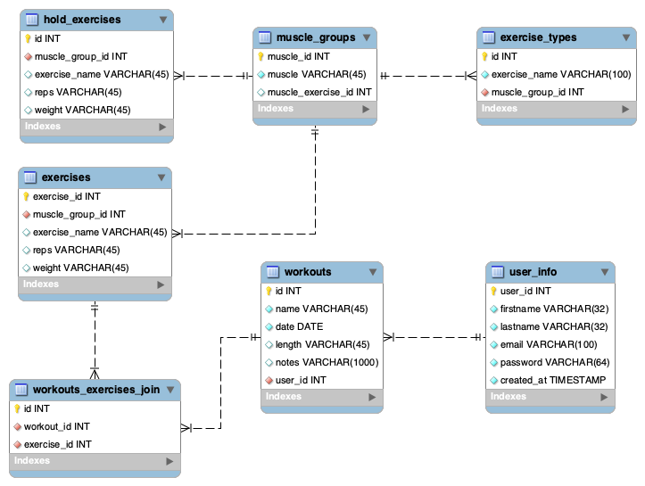

Topic and Purpose:
My website is a workout logger website, branded as Gym Soul, that can allow users to log their workouts by choosing some preset workouts (or other custom), save the workouts, and see their weekly summary.
The intended audience for this website is anyone who goes to or wants to go to the gym to get a workout in and wants to keep track of what they do over the course of the workout
Gym Soul's purpose is to give users a way to organize their workouts and also keep track of how their mental health progresses over time (to be implemented in future versions).
Instructions
My site works by using user credentials to log in, which the user can create an account or, for testing purposes, access the premade user account for Tommy Trojan (username: ttrojan@usc.edu, password: itp304)
Upon login, users are met with the home screen, which lets users view their last 5 logged workouts and allow them to log a new workout. Clicking "Log a new workout" opens up a modal form that users can input information of their workout into. Users are given the freedom of inputting custom information into time of workout, reps, and weight, so they are not restricted to numbers.
Users can access the Workouts page through the sidebar. On this page, they can view all the workouts they have logged and filter the workouts by searching for the name of workout. The workouts are displayed in card form to show basic information, but upon click of a card, an information modal opens up to display the workout more in depth, showing each exercise performed along with sets performed. Users also have the option of deleting the workout or updating the basic information (title, length, and date of workout) when they click on the modal.
To sign out, users can simply click the signout button on the bottom of the sidebar.
Sources
The source of my data largely comes from me and my knowledge with the gym, so I inputted some of the most popular exercises into the exercises table that users can choose from. However, users may also add a custom workout through text input if not in dropdown box. The rest of my data comes from user input, through creating an account or creating new workouts.
Database Diagram
Extras
-
Frontend/Backend AJAX
- Most of my project uses AJAX calls to communicate with the backend and receive information from it to keep the website at single page processing and not redirecting to other pages upon submit
- This includes getting workouts, adding workouts, getting exercises, deleting workouts, refreshing exercises, and searching for workouts.
-
SQL Aggregate Functions
- One SQL Aggregate function was used, which was used in the Workouts page when displaying the total count of exercises for each workout on a card.
-
Many to many table relationship
- One many to many table relationship is used here, between the workouts and exercises. This table holds the workout id and exercise id, as many workouts has many exercises, so we use this joining table to connect the data from workouts and data from exercises.
-
Sessions
- Sessions is used when a user logs in, which then we store if the user is logged in so they remain logged in on page refresh and so we maintain the user id of the user, which we use to fetch workouts.
-
Permissions for only one level: registered users
- I only implement one level of permissions for this website, which is for registered users so they can add workouts, delete workouts, update workout information, and read their workout information. I do not implement any admin or global level permission levels.
Frameworks/Templates
This project uses the Bootstrap 5.0 template all over the projects website to help with templating and displaying the style. I also use the modals from Bootstrap to help with templating the modal and having it display modally.